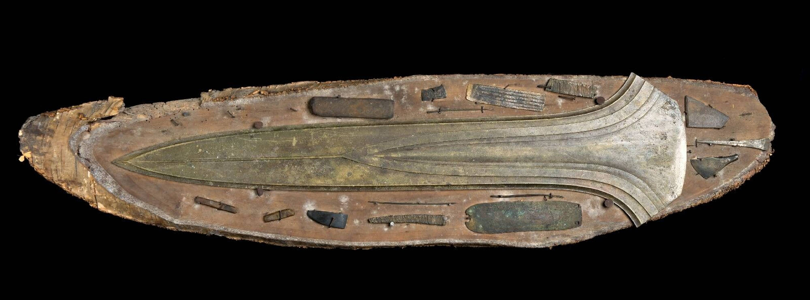

Inleiding – Offerschatten
Welkom bij de tentoonstelling Offerschatten; Rituelen in het landschap van Twente van De Museumfabriek. Lang vóór het christendom waren er in Twente heilige plekken in de natuur. Mensen geloofden dat venen, rivieren, bomen en heuvels bezield waren. Op zulke plekken brachten zij offers aan goden en geesten. Dat deden zij om hulp te vragen of om te bedanken. Vooral moerassen waren belangrijk. Ze waren gevaarlijk en mysterieus en werden gezien als poorten naar een andere wereld. Daarom werden ze eeuwenlang bezocht. In deze tentoonstelling ontdek je waarom archeologen deze vondsten zien als offers en hoe oude rituelen later samengingen met het christendom.